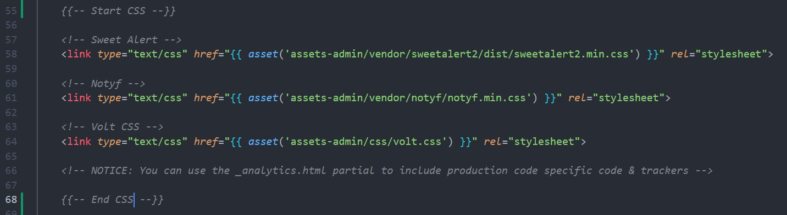

PERTEMUAN 7
📂 Partial View
Partial View digunakan untuk memisahkan bagian tampilan yang berulang seperti header, navbar, atau footer ke dalam file terpisah dengan memanfaatkan fitur Blade seperti @include, @extends, @section, dan @yield
Langkah 1 - @include
@include- Kita analisis terlebih dahulu struktur kode template yang kita gunakan. Silahkan buka file
/pelanggan/index.blade.phpdan tandai dengan memberikan comment bagian berikut:- CSS

- Header, Sidebar, Main Content & Footer

- JS


- Pada folder
views,buatlah sebuah folderlayoutslalu buat folderadmindidalamnya. Pada folderadminbuat beberapa file yang mewakili setiap bagian kode seperti berikut

- Pindahkan blok kode CSS dari
pelanggan/index.blade.phpkelayouts/admin/css.blade.phplalu tuliskan@inlcude('layouts.css')sebagai penggantinyaBefore:

After:

Lanjutkan ke bagian Header, Sidebar, Footer dan JS hingga
pelanggan/ndex.blade.phpmenjadi seperti berikut:
Langkah 2 - @yield, @extends & @section
@yield, @extends & @section- Copy seluruh isi
pelanggan/index.blade.phpke/layouts/admin/app.blade.php.
File ini akan menjadi file utama dan akan dipanggil di setiap halaman yang menggunakan template admin.
- Pada bagian blok kode
{{--start main conten--}}diapp.blade.php, silahkan ganti menjadi@yield('content'):Before:

After:

- Pada file
pelanggan/index.blade.php:- Hapus seluruh isinya kecuali bagian blok kode
{{-- start main content -- }}
- Tambahkan
@extends('layouts.admin.app')dan@section('content')…@endsectionseperti berikut:
- Hapus seluruh isinya kecuali bagian blok kode
Langkah 3 - Active Menu
Pada bagian sidebar, kita perlu menerapkan logika singkat untuk class active pada tag <li> agar menu yang di highlight sesuai dengan URL yang sedang di-akses.
Jika menu yang diakses adalah Pelanggan, maka bisa menerapkan seperti berikut:
Before:

After:
<li class="nav-item {{ request()->routeIs('pelanggan.*') ? 'active' : '' }}">
<a ...>
...
<span>Pelanggan</span>
</a>
</li>{{ request()->routeIs('pelanggan.*') ? 'active' : '' }}Penggunaan request()->routeIs('nama_route.*') untuk menandai menu aktif berdasarkan nama/alias route
Terapkan juga pada <li> Dashboard,
📂 CRUD User
Sekarang kita akan buat fitur CRUD untuk data User dengan form berikut:
- Name →
name=”name"
- Email →
name=”email"
- Password →
name=”password"
- Confirm Password →
name=”password_confirmation"
Langkah 1 - CRUD
MigrationdanModeltidak dibutuhkan, karena sudah tersedia- Pada model
User,$fillablejuga sudah berisiname,email, danpassword
- Pada model
- Buat resource controller dengan nama
UserController- function
index()→ terapkanUser::all()dan tampilkan viewadmin.user.index
- function
create()→ tampilkan viewadmin.user.create- Gunakan
Hash::make()untuk menyimpan password terenkripsi.$data['password'] = Hash::make($request->password);Jangan lupa import Hash
- Gunakan
- function
edit()→ terapkanUser::findOrFail($id)dan tampilkan viewadmin.user.edit
- function
store()→ seperti milik Pelanggan namun sesuaikan data yang akan disimpan dan terapkanUser::create($data)
- function
destroy()→ seperti milik Pelanggan namun sesuaikan menjadi$user→delete()
- function
- Buat direktori baru di
admin/user, lalu pada folderusersilahkan buat halamanindex.blade.php,create.blade.phpdanedit.blade.php
Karena kita sudah menerapkan Partial View pada menu Pelanggan, kali ini kita hanya cukup copy-paste isi dari index, create dan edit milik pelanggan ke user dan sesuaikan Form beserta inputan-nya seperti berikut
- Tambahkan
<li>untuk menu User dilayouts/sidebar.blade.php
Hasil akhir halaman index dan create User:


Langkah 2 - Validasi
Jika CRUD sudah berhasil, lanjutkan dengan aksi berikut:
- Terapkan validasi pada form berupa :
name→ required, string, max:100
email→ required, email, unique:users,email
password→ required saat create, min:8, confirmed
- Pastikan form bisa repopulate setelah error (
old()).
- Tampilkan flash data untuk success/error baik di
create.blade.phpmaupunedit.blade.php